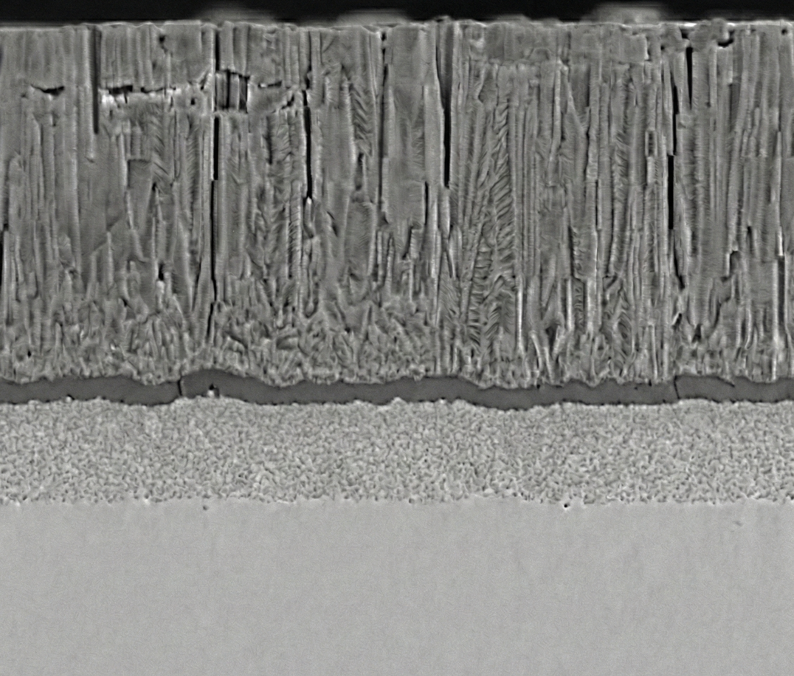

Thermal Barrier Coating Systems
Engineered for thermal insulation, heat protection, and thermal management in high-temperature environments.
System Overview
HTX Thermal Barrier Coating Systems are designed for applications involving thermal insulation, heat protection, and thermal management in high-temperature environments.
The system focuses on equipment-level process configurability and structural stability, supporting multilayer and relatively thick coating architectures for components subjected to thermal gradients or sustained heat loads.

Cross-section of a multilayer thermal barrier coating structure.
Design Focus
-
Thick and Multilayer Coating Structures:
The system supports coating architectures requiring increased thickness or multilayer configurations, suitable for thermal barrier and heat-management applications.
-
Process Stability-Oriented Design:
System design prioritizes process repeatability and operational stability rather than laboratory-scale extreme performance metrics.
-
e-Gun and Sputtering Process Integration:
The platform allows integration of e-Gun evaporation and vacuum sputtering processes, enabling flexible configuration based on coating structure and material requirements.
-
Target Material Compatibility:
System configurations support metallic and oxide-based target materials for thermal barrier and thermal management coating applications.
Typical Applications
- Thermal barrier coating system configurations for turbine blade applications
- High-temperature insulation coatings for power generation equipment
- Thermal management and heat-protection structures for civil aviation components
- Functional thermal barrier coatings for high-temperature industrial equipment
(Applications listed describe equipment applicability. Coating design and production specifications are defined by the customer.)
Start a Technical Discussion
We welcome technical discussions regarding thermal barrier coating system configurations and process requirements to evaluate feasibility and application suitability.
Contact HTX Engineering
If possible, please include the following information in your inquiry:
- Substrate material and component type
- Target operating temperature range and environment
- Coating purpose (thermal insulation, heat protection, thermal management, etc.)
- Existing coating structure or equipment configuration requirements, if any